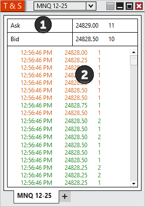
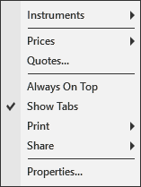

|
<< Click to Display Table of Contents >> Using the Time & Sales Window |


|
Using the Time & Sales Window
|
<< Click to Display Table of Contents >> Using the Time & Sales Window |
|
There are multiple ways to select an Instrument in the Time & Sales window.
•Right clicking on the Time & Sales window and selecting the menu Instruments. •With the Time & Sales window selected begin typing the instrument symbol directly on the keyboard. Typing will trigger the Overlay Instrument Selector.
For more Information on instrument selection and management please see Instruments section of the Help Guide. |
 Understanding the layout of the Time & Sales window
Understanding the layout of the Time & Sales window

|
Bid |
The current bid price followed by the number of contracts at the current bid. |
Ask |
The current ask price followed by the number of contracts at the current ask |
You can disable the Quotes section by clicking on your right mouse button and deselecting the menu item Show Quotes.
The Time & Sales Grid displays Bid, Ask, and Last data.
Daily High/Low |
Displays an 'H' if the trade occurred at or above the current session high price Displays an 'L' if the trade occurred at or below the current session low price |
Time |
Displays the time stamp of the trade, The time stamp format can be configured via the Time & Sales properties dialog window |
Price |
Displays the price of the trade |
Size |
Displays the volume of the trade |
Block |
Displays a 'B' if the last trade size was greater then the "Block alert trade size" configured via the Time & Sales properties dialog window |
You can enable or disable the columns by right mouse clicking within the Time & Sales window and then selecting the menu item Properties...
Note: Selecting an instrument outside of market hours will display snapshot data from the data provider. This can result in the first price information being from the previous close. |
Right mouse click on the Time & Sales window to access the right click menu.

Instruments |
Selects the instrument |
Prices |
Selects what level 1 data to display, you can choose to display bid, ask, and last data in the Time & Sales window. |
Show Quotes |
Sets if the quotes section is displayed |
Always On Top |
Sets if the window should be always on top of other windows |
Displays Print options |
|
Share |
Displays Share options |
Properties... |
Sets the Time & Sales properties |
Using TabsPlease see the "Using Tabs" section of the help guide for more information. |